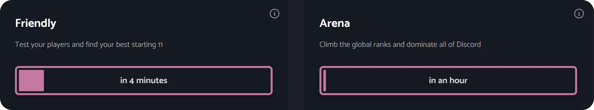

Navigating the Dashboard 101
The Dashboard is the hub of all of Soccer Guru’s actions. Here’s an overview and explanation of the Dashboard and how everything functions:
Log In
The first thing a user will need to do is log in to the Soccer Guru Dashboard. This is done in the same way a user would log in to Discord. Once users are logged in, they can access the following features.
Ranks & Rewards
At the top of the Dashboard is a summary of a user’s progress and standings within Soccer Guru. The numbers displayed are:
Arena Position
The user's current rank within Soccer Guru. Winning games against opponents will increase a user’s rank. Winning Friendly matches will not increase a user’s rank.
Remaining Attacks
The number of attacks a user has left to use. Attacks reset once per day (5 PM UTC). Users can earn more attacks by becoming Premium members via Patreon.
Daily Streak
The number of days in a row the user has claimed their experience and Credits via the Dashboard. Completing a 7 Day streak earns the user a Gold 2 Player Pack.
Vote Streak
The number of days in a row the user has upvoted Soccer Guru on top.gg. A user can be rewarded with Credits, experience, or players. The user will receive better rewards the longer they continue their streak.
Claim & Daily
Claim and Daily are vital to building a user’s squad. Here’s how they work:
Claim
Users can activate Claim to gain a new player for their squad. This resets every hour. A dynamic timer on the page will display in real-time the duration until a user can activate Claim again. After claiming a new player, the user can choose to promote the player, sell the player for Credits, or simply dismiss the message. Players are automatically added to a user’s squad.
Daily
Users can activate their Daily once per day to earn Credits, experience, or players. Completing a 7 Day streak earns the user a Gold 2 Player Pack. As with Claim, a timer will let users know when they can activate their Daily again.
Voting
Voting allows users to earn rewards by upvoting Soccer Guru on different platforms.
Vote on top.gg
Upvoting Soccer Guru on top.gg rewards a user with Credits, experience, or players. The user will receive better rewards the longer they continue their streak. Users can upvote Soccer Guru on top.gg every 12 hours. Again, a timer will show the amount of time until a user can vote again.
Vote on DBL
Upvoting Soccer Guru on Discord Bot List rewards users with 2 new players for their club. Users can vote every 12 hours. As with all claiming and voting, a timer shows the amount of time until a user can vote again.
Friendly & Arena
This is where the action of Soccer Guru takes place.
Friendly
Here users can go head-to-head with others in a Friendly. Users can play a Friendly as long as they are out of the 1 hour cooldown period initiated by playing an Arena Match. Playing a Friendly will not consume an attack
Arena
This is where users continue their journey to becoming the best Soccer Guru manager on Discord. Users can play an Arena match as long as they have an attack and they are not in the cooldown period (1 hour). The “Attacks Remaining” number at the top of the Dashboard will display how many attacks a user has left to play Arena matches. Attacks reset at 5 PM UTC every day. All users receive a minimum of 8 attacks. Users can earn more attacks by subscribing to the Soccer Guru Patreon and becoming Premium members

Reminders
Desktop users can use the Reminder feature. Users can click the Bell icon at the top of the Dashboard to receive alerts as soon as their commands become active. Note: Users must have the Soccer Guru Dashboard open as a Tab on their web browser for Reminders to be active.